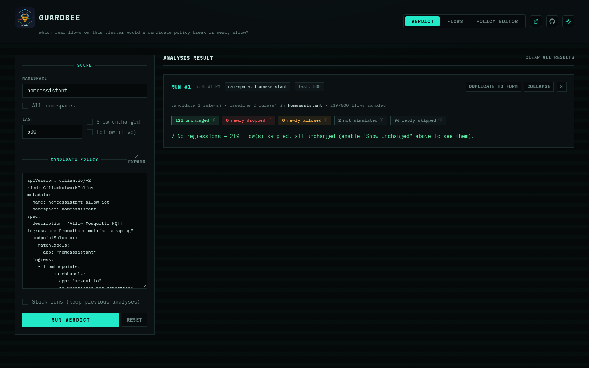

How verdict works
Every sampled flow is judged twice — once against the real baseline
CNPs/CCNPs, once against baseline+candidate — using Cilium’s own
pkg/policy engine (the same .Parse() conversion the real agent uses, not
a reimplementation). Flow identities come directly from Hubble’s own
resolved Endpoint.Identity, so no separate CiliumIdentity lookup is
needed.
Known v1 simplifications
Documented in code, not silent:
| Simplification | What it means |
|---|---|
| Ingress only | Only ingress-at-destination is evaluated — not full bidirectional ingress+egress correctness. |
| L7/FQDN flows | Counted as not simulated rather than guessed — those verdicts live in Envoy/the DNS proxy, not the policy map this engine computes. |
| Reply packets | Skipped (reply (skipped) in the summary) — connection tracking always allows those regardless of CNP ingress rules. |
| Real identities only | Candidate labels with no matching live pod are never exercised by any sampled flow — GuardBee never invents a fake identity. |
--last is a ceiling |
Hubble’s flow buffer is a small recent-flow ring, not persisted history — it may hold fewer flows than requested. Use --follow to accumulate more over time instead of raising --last further. |
A
0 newly droppedresult can mean “nothing in the sample touched the port you changed,” not “nothing would break” — re-run, raise--last, or use--followif a result looks too clean.
Two regressions it caught
Both examples are real runs against the author’s own homelab cluster — not synthetic fixtures.
A blank source/destination in the output (e.g.
reserved:host) is a non-pod peer, not a bug — most commonly kubelet’s TCP liveness/readiness probe.
Scoped-too-narrow MQTT allow
examples/homeassistant-allow-mosquitto.yaml looks correct — it does
correctly keep real MQTT traffic working:
guardbee verdict -n homeassistant \
examples/homeassistant-allow-mosquitto.yaml
But it would also silently break a Prometheus :8123 scrape and
kubelet’s health check on the same port — both confirmed via the
Kubernetes API, not guessed. examples/homeassistant-merge-ready.yaml is
the corrected version, re-run against the same cluster:


Left: looks correct, isn’t. Right: same candidate, fixed — every real flow unchanged.
Cluster-wide CoreDNS lockdown
The same lesson, one level up. examples/ccnp-coredns-dns-only.yaml is a
CiliumClusterwideNetworkPolicy that correctly restricts CoreDNS ingress to
DNS queries from any in-cluster pod:
guardbee verdict --all-namespaces --last 15000 \
examples/ccnp-coredns-dns-only.yaml
It would also break kubelet’s liveness/readiness probes and the
observability namespace’s Prometheus scrape, across all CoreDNS pods.
examples/ccnp-coredns-merge-ready.yaml adds explicit rules for all three
and comes back with zero regressions on the same sample size.
This one needs
--all-namespaces, not a single namespace — the regression lives on the source side, which a namespace filter pinned to the destination’s own namespace wouldn’t rule out, and you may not know a CCNP’s full blast radius in advance anyway.